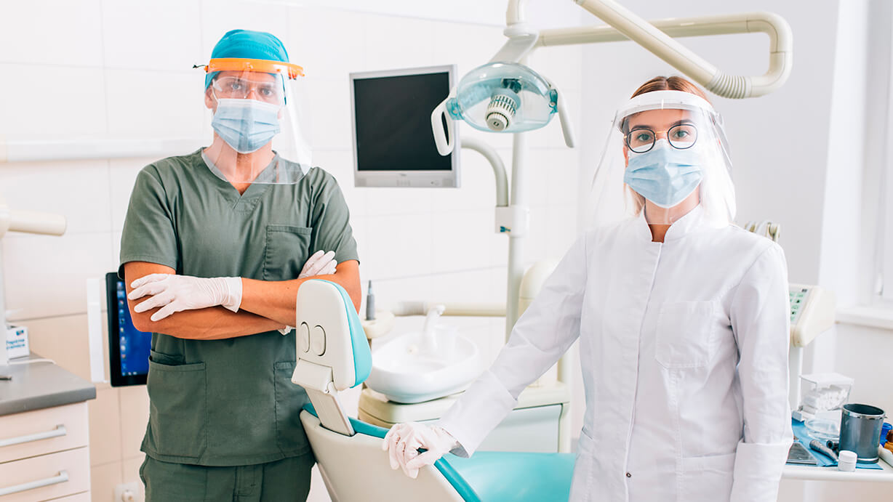

Cuidamos tu salud bucal con atención personalizada
Consultorio Dental Sonrisa Sana ofrece sus servicios en el área metropolitana desde 2026.
Este consultorio, fundado por Dr. José Och y Dr. Damián Yam, brinda atención dental para toda la familia,
asegurando que todos puedan cuidar su sonrisa y sentirse seguros.
Nuestro equipo de especialistas te ayudará a mantener tu salud dental y a lograr la mejor versión de tu sonrisa.
Utilizamos materiales y tecnología de alta calidad en todos nuestros tratamientos.
